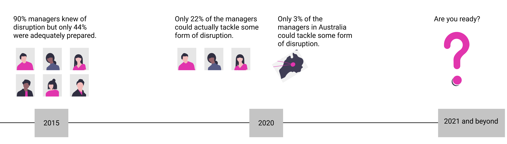
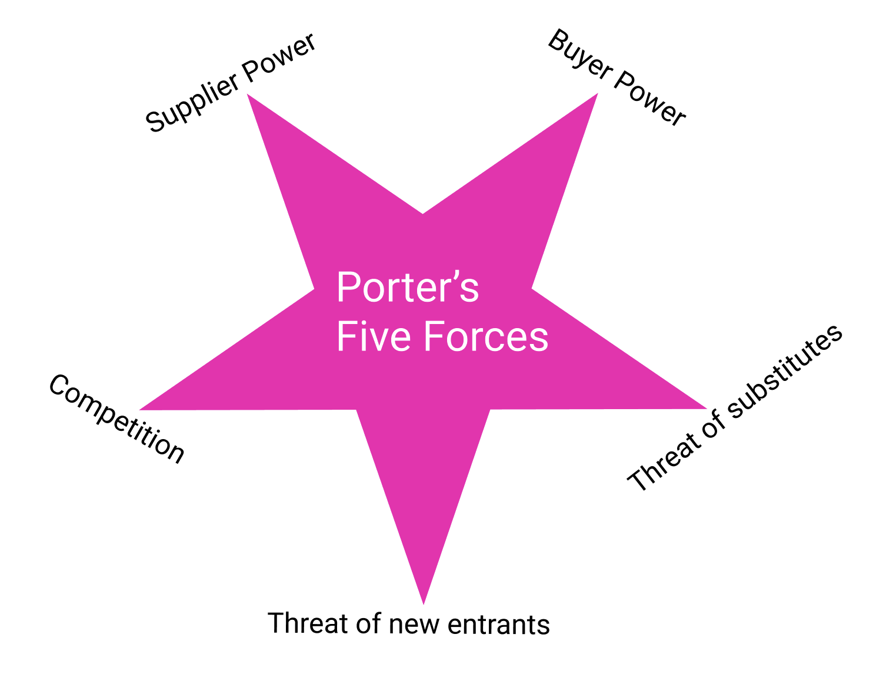
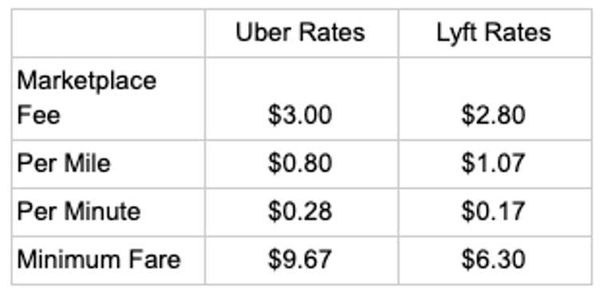
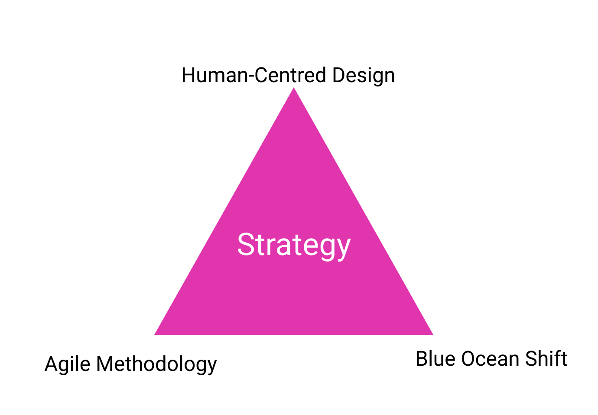

Strategies in IT companies are currently done at a business level and then executed by the rest of the organisation. This article presents a tri-focal approach to strategy creation and implementation, looking at the competition, collaboration and adoption and decision making and risk management. In this article, we look at two patterns for handling such requests.
A 2015 survey from MIT Sloan Management Review and Deloitte showed that 90% of managers and business executives anticipated digital trends would disrupt their industries -maybe their businesses - to a great or moderate extent [1]. Interestingly, only 44% reported their companies were adequately prepared for the disruption. From late 2016, we saw companies responding by adding roles with a digital "orientation" as part of that preparation. As a result, today, we have positions such as digital strategists, product designers, chief digital officers, digital engagement managers, digital finance managers, digital marketing managers, and digital supply chain managers, etc. But did the addition of these digitally-oriented roles enable these companies to handle the digital disruption? Not really.
A follow-up survey wasn’t done by the same team. However, in 2020 MIT Information Systems conducted research involving 1311 large global companies, which found only 22% of them were equipped to manage some sort of digital disruption. This is in-line with the 2016 study [2]. For Australian companies the numbers were lower — just 3% were able to tackle some form of disruption and those 3% did not think they were really ready.
In 2021 we have to add the COVID-19 crisis and lockdowns and all the uncertainties into the mix. COVID-19 has accelerated the situation and forced some hard decision making around a digital future. Knowing that only 3% of companies were ready, there is a significant opportunity for the other 97% of Australian companies to progress faster to stay ahead of the game. But, how can a company be ready?
Companies can be ready by designing a strategy using a tri-focal approach that combines Blue Ocean Shift by professors Kim and Mauborgne for Economic and Business thinking [4,5], Human-Centred Design for design thinking, and Agile Methodology for an agile mindset and projects delivery. But first let’s delve a bit deeper on why companies need to think of strategy and their digital future? There are three reasons.
Reason 1: Cool technologies are not products
Sadly, many companies think they know how to secure a great digital future by avoiding death. Death in this case referring to a product becoming redundant to users, or the release of a new product that does the same things only better. Often companies adopt the latest “cool” technologies to avoid product death, going for technologies with buzzwords like AR/VR, Big Data, Blockchain, the Internet of Things (IoT), and many more. Unfortunately, history tells us that this is not enough. Motorola’s Iridium was the first global phone, and MITS created the first personal computer. Yet, these companies are no longer seen to be in the mobile phone or computing industry. Their cool technologies were taken over by competitors. These great technology creators failed in the long run because they weren’t ready for disruption. Disruptors took the technology and provided more value than just features and functions. As a result, the creators became obsolete, with competitors and disruptors taking over. Today, there are thousands of technologies resting in peace in the corporate graveyard due to the lack of readiness.
Markets are unpredictable and Michael Porter, a professor of Harvard Business school describes it in his Five Forces Framework [6]. I have simplified the five forces below:
Supplier power
Company owners know that they need suppliers at every point, and they can't make a profit if they don't have enough options to change their suppliers if the suppliers have enough power to drive up or increase the prices for supplies. The less suppliers in the market, the more leverage they have to manipulate companies and cause a significant headache.
Buyer power
In the same manner that suppliers can increase the price, the buyers can also decrease the price. The less clients a company has, the better chance the clients have to switch to another company.
Competition
When other companies in the market offer the same products or similar products with better quality, a company have more chances of losing business - including suppliers and buyers. On the other hand, if no one is up to a company’s calibre in the market, that company can have a monopoly to rule the market with the prices they want.
Threat of substitutes
There are many threats to a company, but the most crucial one is substitution. When rivals offer the same products or services at lower prices, a company has more chance of losing business as their buyers can substitute them. If a company provides a unique service or product, they have more power and fewer chances of being replaced.
Threat of new entrants
If a company’s business model is easy or cheap, they have more chances of facing new competition now and then. This will lessen their power in the market and force them to increase the quality, or increase quantity and decrease the prices.
Reason 2: Strategies may be an endless loop of zero-sum-game
When we open up any business review magazine or report, or simply search in Google, we will notice that company decisions fall under two strategic themes: Lower price or more value for the same price. Porter [6] said it best: When faced with competition companies always end up doing one of the two:
1. Offer a lower price than the competition, or
2. Offer more value for the same price as the competition.
Every company adopts one or both of these choices partially or fully, to stay relevant. Sadly, it's a never-ending cycle! Companies think they are creating a “competitive advantage” with offerings that are cheaper than their competition. But it doesn’t work. Their competitor beats them back by reducing their price too. Consider the example of Uber and Lyft in the US market. Uber was the first to offer a ride-hailing app for the public. Lyft got in the market too. When Lyft started driver promotion, Uber did that too. When Lyft added driver gamification and car loans, Uber did too. When Lyft offered new users with huge amounts of free ride credit, Uber also gave their riders account credit for free. But neither Lyft nor Uber are adding value that their competitor couldn’t offer. This competition cycle never ends! When Uber wins customers, Lyft loses. And when Lyft wins customers, Uber loses. They are both fighting for the same slice of the pie. They are playing the “zero-sum-game”. One party has to lose for the other to win.
In the USA it's not easy for a customer to compare Uber and Lyft rates on a national level without sitting down with an excel sheet. But if we look at a big city like San Francisco, Lyft charges more per mile and less per minute than Uber, so short rides in traffic may be cheaper on Lyft, while longer rides at high speeds will be more expensive. Ultimately though, prices fluctuate with supply and demand.
Image source: [3]
Though Uber and Lyft no longer tell customers when they implement what they call "surge pricing" and "prime time", during busy times prices on both platforms fluctuate depending on how many drivers are available and how many passengers are requesting rides. But these competitive strategies are based on a zero-sum-game.
There are examples of this type of competition with zero-sum-game in the digital industry as well. Competitors create solutions that are ten times faster than their competitors or maybe offer 20 times more cloud storage. Sometimes they add three extra features to their product compared to their competitors’, for the same price.
While there is nothing wrong with these tactics, how do they contribute to our digital strategy is the question companies should be asking themselves. How well can employees embrace these tactics, how are customers responding to them, what value do these propose or introduce to customers and how to know when to pivot or refine?
Reason 3: Failure to implement strategy
Even when a company has done business and economic analysis and created the best strategy, they may fail in the implementation. Throughout my research, I can see various challenges to implementing strategy, and at a high level, there are constraints to implementation because of the following:
Organisational behaviour
Good intentions embodied in a new structure are not sufficient to change behaviour. Teams created to enact strategies across several geographic regions can't always coordinate their research and development. As a result, differences in the delivery model emerge, and the value stream may look different. One standardised educational program to demonstrate how the global company should work can still fail to overcome local barriers. At the business-unit level, the lack of cross-functional teams can also become a barrier to strategy implementation and will be addressed in our upcoming article.
The view on strategy
The traditional view of strategy has been approached as an exercise in where to play - identifying industries with favourable economic structures, and how to win - determining how to capture value by focusing on products and offerings, delivery quality, or customer relationship. This view often leaves out the challenges of societal and individual needs and upcoming technologies.
Recommendation
This is how companies can be ready.
Porter’s Five Forces suggests companies to focus on the business and market. However, there’s now much more to the story. Companies today are intertwined by technologies with businesses, and they are run by humans, to serve customers who are humans. Therefore, my recommendation for any digital strategy in a nutshell is to look at:
- Individual and societal changes.
- Emergent technologies.
- Market forces – Porter’s five forces added with factors of globalisation.
To help companies be adequately prepared for a digital future my recommendation is to design strategies and help implementation of these strategies. Human-Centred Design, Agile methodologies and Blue Ocean Shift are three key areas that we can rely upon to build the strategy, else the strategy will be disjoint from reality.
Why Human-Centred Design?
Choosing what to do and what not to do is the definition of strategy. To avoid pitfalls of a strategy going wrong, we must include participants that represent all areas of a company. Human-Centred Design helps to do that. It helps create and act on a strategy for your company, team and create repeatable steps that support rigour and creativity. Human-Centred Design helps analyse the world as it is and imagine how it could be with the new measures. It helps to identify conditions that would need to be true to make the possibility a winning strategy, and build and conduct different types of tests to help a business choose among the options.
Why Blue Ocean Shift?
The Blue Ocean Shift originates from proven data rather than just intellectually appealing ideas. It's based on research that ran over ten years and analysed company successes and failures in more than 30 industries. Competing in known strategies with the two options above in reason 3, puts companies at risk of not evolving. This kind of competition is known as the Red Ocean, where all competitors fight fiercely for the same demand in the market.
The Blue Ocean Strategy and Shift by W. Chan Kim and Renée Mauborgne is recognised as one of the most iconic and impactful business strategy books ever written. Instead of beating the competition, it helps to make your competition irrelevant. Taking a Blue Ocean approach means your goal isn't to outperform the competition or be the best in the industry. It doesn't mean you will give up what you are doing and do new things. Instead, you aim to redraw industry boundaries, operate within that new space, and make your competition irrelevant. It means no more zero-sum-games or two themed competition strategies. Consumers don't have to choose between value and affordability.
Why Agile?
Currently, a strategy is created for a long-term period, let's say two to five years. A roadmap is derived consisting of several strategic initiatives to reach the targeted state. Measures are set to cross-check the current business situation with that predesigned target state in the strategy. The process is tedious, and each initiative can take several years. Nonetheless, even the most sophisticated, thoroughly planned and commonly aligned strategy will miss its purpose if it is already obsolete when it is released into an environment with new challenges. Therefore, strategy management has to evolve as well, which is where Agile concepts come into play. For those of you, who think strategy is lives in reports and the actionable steps are ambiguous, you need to dig deeper.
Conclusion
Companies need to be ready with a strategy to secure a digital future, and digitally-oriented roles alone will not get the work done. In Australia, only 3% of companies could manage some disruption in their industry [2]. Preparing for a digital future is hard. It means developing digital capabilities in which a company's activities, people, culture, and structure should be in sync. Most companies are constrained by a lack of resources and talent, but mainly a lack of methods and guidance to go through this. My team lead - Amanda Pitcher and I have discussed this for three years and believe that the three domains of Human-Centred Design, Blue Ocean Strategy and Agile Methodology can help solve this crisis.